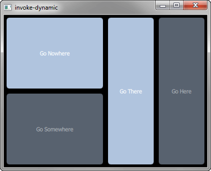

Qt SCXML Invoke Example (Dynamic)
Invokes a dynamically loaded nested state machine.

Invoke Example (Dynamic) demonstrates how to use the <invoke> element with generated nested state-machines, where the SCXML file is dynamically loaded. The <invoke> element is used to create an instance of an external service.
Running the Example
To run the example from Qt Creator, open the Welcome mode and select the example from Examples. For more information, visit Building and Running an Example.
Invoking the State Machine
In statemachine.scxml, we specify a state machine with the name Directions of type http://www.w3.org/TR/scxml/ to invoke:
<scxml
xmlns="http://www.w3.org/2005/07/scxml"
version="1.0"
name="Directions"
initial="anyplace"
>
<state id="anyplace">
<transition event="goNowhere" target="nowhere"/>
<transition event="goSomewhere" target="somewhere"/>
<state id="nowhere"/>
<state id="somewhere">
<invoke type="http://www.w3.org/TR/scxml/">
<content>
<scxml name="anywhere" version="1.0">
<state id="here">
<transition event="goThere" target="there"/>
</state>
<state id="there">
<transition event="goHere" target="here"/>
</state>
</scxml>
</content>
</invoke>
</state>
</state>
</scxml>
Dynamically Loading the State Machine
We link against the Qt SCXML module by adding the following line to the invoke-dynamic.pro file:
QT += qml scxml
We dynamically create the state machine, as follows:
import QtScxml 5.8 MainView { stateMachine: directions.stateMachine StateMachineLoader { id: directions source: "qrc:///statemachine.scxml" }